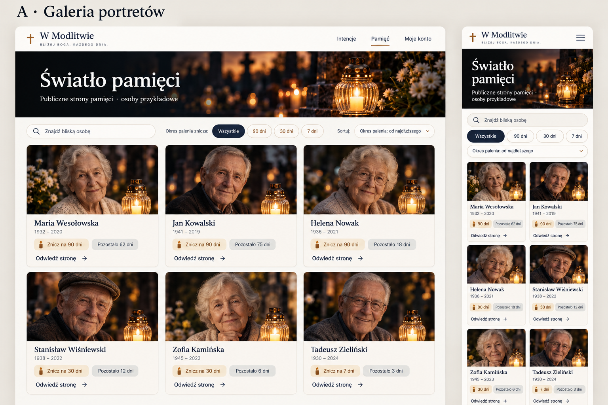
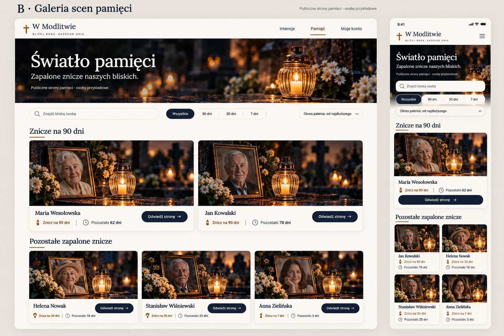
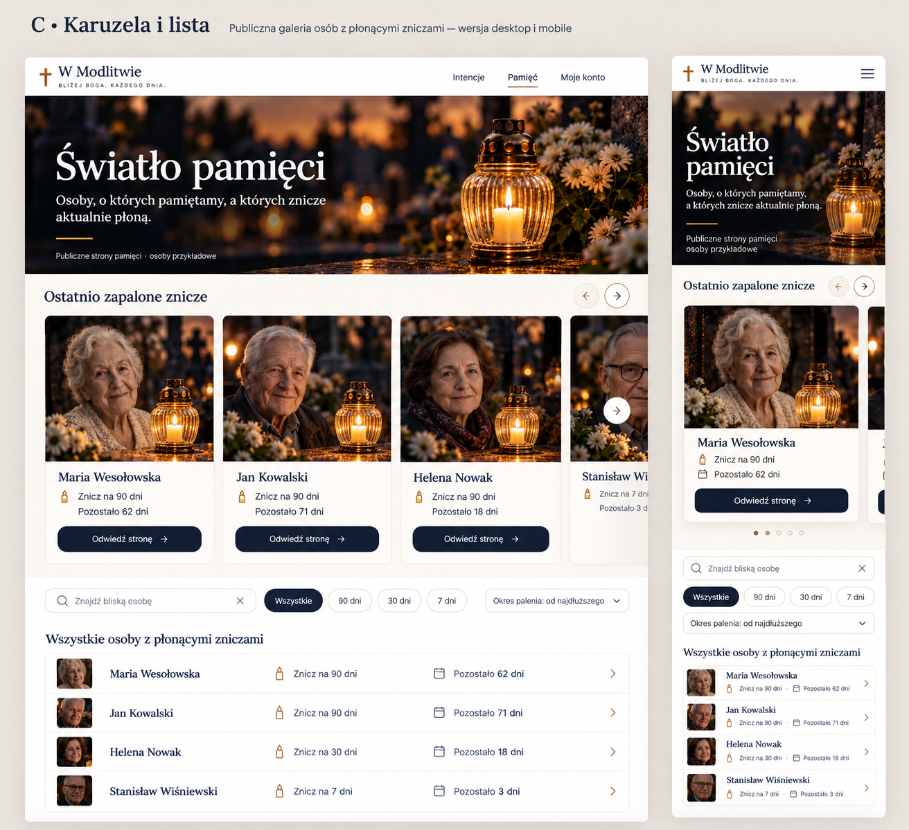

Galeria pamięci
Trzy propozycje układu publicznej galerii stron pamięci. Otwórz dowolną makietę w pełnym rozmiarze, aby porównać wersję komputerową i telefoniczną.
Wariant A
Otwórz pełny obraz ↗Galeria portretów
Najczytelniejsza siatka kart. Wszystkie osoby i podstawowe informacje są widoczne od razu, bez dodatkowego przewijania poziomego.

Wariant B Rekomendowany
Otwórz pełny obraz ↗Galeria scen pamięci
Duże fotograficzne sceny dla świec 90-dniowych, niżej zwarta siatka pozostałych. Ten kierunek najlepiej przenosi klimat istniejącej strony pamięci.

Wariant C
Otwórz pełny obraz ↗Karuzela i lista
Najpierw pozioma karuzela niedawno zapalonych świec, potem lista wszystkich osób. Mocniej podkreśla najnowsze strony, ale wymaga więcej interakcji.
